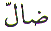

The Arabic Letter
Dhwad ( ) is the 15th Letter in the normal
Arabic character set. In the numerical character set, Abjad, Dhwad
(
) is the 15th Letter in the normal
Arabic character set. In the numerical character set, Abjad, Dhwad
( ) has the value 800. The position
of the Letter Dhwad (
) has the value 800. The position
of the Letter Dhwad ( ) in Abjad format
is 26. This article is about the spiritual meaning of the Letter
Dhwad (
) in Abjad format
is 26. This article is about the spiritual meaning of the Letter
Dhwad ( ).
).
The Letter Dhwad ( ) is for Dhiya
) is for Dhiya - Light.
- Light.
Dhiya - Light is not
Light without darkness. Everything in this world is relative.
How could we appreciate something without knowing the opposite.
If everyone knew the difference between right and wrong, there
would have been no need for Allah to send any Messengers (
- Light is not
Light without darkness. Everything in this world is relative.
How could we appreciate something without knowing the opposite.
If everyone knew the difference between right and wrong, there
would have been no need for Allah to send any Messengers ( ) to enlighten human beings. Everyone
is not enlightened. Therefore Allah sent Messengers (
) to enlighten human beings. Everyone
is not enlightened. Therefore Allah sent Messengers ( )
to enlighten others.
)
to enlighten others.
By the same reasoning we can use the analogy of the sun. There is one sun in our solar system. And that sun is Allah's creation. We all get our light from that one source of light which acts as a lamp. But that one source of light enlightens other objects around it. Those other objects do not generate light but they receive the light and they reflect and disperse the light of the one source.
If we look at the above
two references, Allah gave Musa ( )
and Haroon (
)
and Haroon ( ) the criterion
and a light and a reminder. In the second reference, Allah sent
Muhammad
) the criterion
and a light and a reminder. In the second reference, Allah sent
Muhammad as a Lamp spreading Light. Therefore
Muhammad
as a Lamp spreading Light. Therefore
Muhammad  is the Lamp that spread the light
to the other Messengers of Allah (
is the Lamp that spread the light
to the other Messengers of Allah ( )
inviting them and their communities to Allah's Grace. In the case
of Muslims, we received the 'Lamp' that spreads the Light and
invites us to Allah. Therefore after Muhammad
)
inviting them and their communities to Allah's Grace. In the case
of Muslims, we received the 'Lamp' that spreads the Light and
invites us to Allah. Therefore after Muhammad other communities also have to believe in Muhammad
other communities also have to believe in Muhammad  as a Messenger of Allah and believe in the Message given to Muhammad
as a Messenger of Allah and believe in the Message given to Muhammad
 . That is going from darkness into
Light.
. That is going from darkness into
Light.
Dhallal is to Mislead. Shaytan tries to keep people in the dark or he misleads people from light into darkness.
Then these misled people will try and mislead others into darkness. There are many ways of being misled. Lack of knowledge, pride and arrogance are some of the avenues that can lead to the wrong path. The only way to avoid being misled is to put our trust in Allah and follow that which has been sent.
Allah tells us in the Quran, that He Himself will take on the responsibility of Guiding those whom he has guided to the truth.
How does Allah do that ?
Dhameer is Conscience. Dhameer - Conscience is internal knowledge or judgement of right or wrong. Dhameer - Conscience is moral sense or morality. Dhameer is placed in the heart of every individual. Every time we think of committing a sin or commit a sin, the Dhameer will nag us. Some people manage to subdue or kill this conscience and carry on committing sin, regardless. Those, whom Allah has guided, listen to their Dhameer which reminds them of the punishment and they abstain from sin. Dhameer is like an alarm bell which starts ringing if we commit a sin knowingly.
Dhall means Astray. And we ask Allah often everyday:
Allah created the Ard - Earth as a place
to send his ultimate creation, the human being. But why did Allah
send us to Earth ? Because Ard ends
with the Letter Dhwad ( ) and so does the
Attribute of Allah Al
Qabidh
. With the Attribute Al
Qabidh,
Allah constricts us. Then Allah tries us with distress with His
Attribute Ad Dhaar .
Everyone of us suffers distress at one time or another. Either
through loss or illness. We can only experience distress if we
are created. Why ? Because distress is associated with perishable
things. And everything will perish except Allah.
) and so does the
Attribute of Allah Al
Qabidh
. With the Attribute Al
Qabidh,
Allah constricts us. Then Allah tries us with distress with His
Attribute Ad Dhaar .
Everyone of us suffers distress at one time or another. Either
through loss or illness. We can only experience distress if we
are created. Why ? Because distress is associated with perishable
things. And everything will perish except Allah.
And Allah in his infinite Mercy relieves us from the Distress.
| BACK |